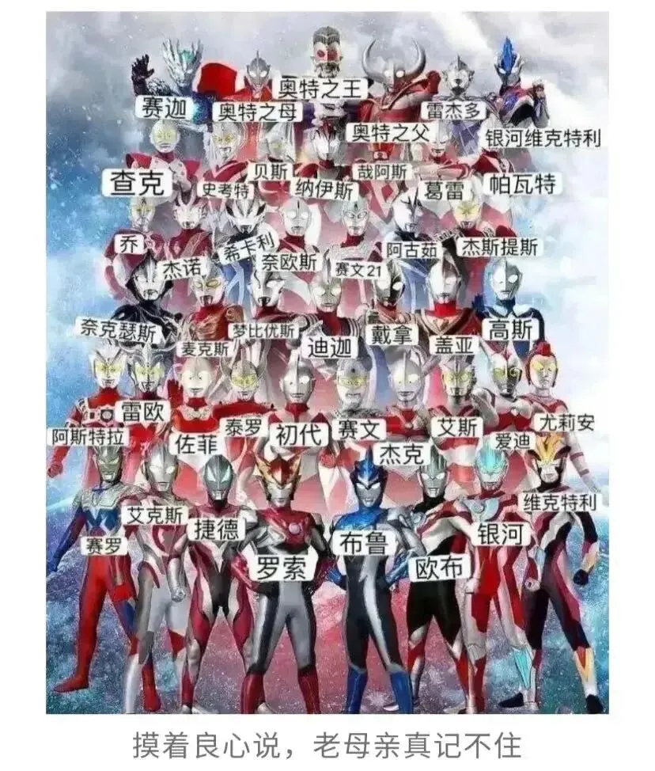

孖仔帮
公众号ID：twinsbang
关注
文|圆圈妈妈
网图|侵删
4月14日，圆圈兄弟终于返校了。
神兽归笼成功，我的心情如何呢？欢迎大秦赋里的段奕宏来演绎下：
我，真的是激动到狂喜，想要落泪，甚至狂喜到有点不可思议，怀疑这是不是真的，唯恐是个谣言，是个骗局，然后短暂的空白之后就确认了，这就是真的，然后掩面喜极而泣。
深圳中小学幼儿园原定2月14日开学，受新冠疫情影响，经过一而再再而三的延迟，终于在4月14日，有惊无险地开学了。
过去的2个月，我们居家隔离了42天，做了55次核酸，圆圈兄弟上了30天的网课，我接受了3次街道办疫情防控指挥部的心理咨询热线帮助。
过去的两个月，我时常感觉自己的灵魂有两面，一面持续性堕落放纵，一面间歇性发愤图强。
据说这是要疯的前奏。
每天的状态都是：头痛晕眩+肩膀酸痛+视野模糊+呼吸不畅...
每天会听到至少800遍喊妈妈的声音，哦...还要再乘以2，double kill
以至于....
闲下来了，容易受惊，
忙碌的时候，就易怒暴躁，
睡着了也不好过，会突然心悸。
值得一提的就是，每天还会有好几场精彩的宅斗比赛上演：起初是两个娃单打，接着我和圆圈爸被迫应战，于是变混合双打，最后是三方割据战，僵持不下...
然而这还不算什么，最难最骚的操作是上网课。
起初，为了避免相互影响，配置了两套设备，打算分开两个位置，但地方小，无法实现，只能让一个娃戴耳机，但耳机只有一个，两人都想要...
为了阻止战乱，只好让耳机去收纳箱里吃盒饭。
庆幸两人是同班，其实配一套设备也可以，两人共享一个网课链接。
跟所有辅导娃写作业的老母亲一样，每天的口头禅就是：坐端正，腰背挺直，认真点，听老师讲，错了就改，自己做，不要老喊妈妈。
唯一不同的是，我这边念叨完，还得无缝对接地对另一个娃再念叨一遍。
这不一碗水端平嘛！口号也要double kill。
厕所曾经是我最后的倔强，我喜欢在里面深呼吸，哪怕味道不咋地，也总好过被两个熊孩子轰炸在外面生无可恋，但现在这块唯一的净土已经被一群叫奥特曼的男人们占领了。
他们会在我关闭厕所门之后，依然徘徊在门口，执着地给我科普奥特曼卡片，一直到我从厕所里出来为止。

然而很期待地问我：“妈妈你最喜欢哪个奥特曼！”
这根本就是个送！命！题！
以我多年来的经验，当双胞胎的问题中含有“最”这个字，千万不能正面回答，不管选了哪个，都会让其中一个不高兴，还会被不停地质问：“你怎么可以最喜欢他喜欢的？为什么你最喜欢的不是我喜欢的？”
“妈妈...妈妈...说话呀，为什么你不回答我呀？！”
我，一边马勒戈壁，一边强颜欢笑，内心在SOS：我不想当妈了，就让我被马桶原地冲走吧！
好在，我的求生欲望指数极强！
在这个充满“不确定性”的日子里，每天都会有“惊吓“，既有突如其来的“封控”，也有定时定量的“吃棉签”，更有来自家中两只神兽无以复加的“轰炸”....
就这...竟然被我熬到了开学。
虽然开学前三天又经历了一段不可描述的过程，无非就是做核酸，接龙，填申报，写保证书，拼图核酸码粤康码，准备佐证材料...
但只要有盼头，让干啥都行，只要这次能顺利投递成功，别出幺蛾子！
无可否认，疫情下的居家隔离，暴躁易怒，焦虑恐慌是真的。
但与孩子们朝夕相处，看着他们一天天长大，，一点点进步，那种满足感和自豪感也是真的。
圆圈快7岁了，我发现，这样1对2地跟他们相处的机会其实很少，后面可能就越来越少了。
只有我们娘仨在一起的感觉，特别不一样。
好像当年我肚子里怀着他们俩的时候，一个人的身体，三颗心跳...
不是他们需要我，而是我需要他们。
虐也罢，乐也罢，有他们在身边，心就会定~
居家隔离期间，经常会听到楼下有救护车的声音呼啸而过，每次我都会下意识地看看圆圈兄弟。
而他们感觉到我的眼神后，也会从玩耍中停下来回应我一个没心没肺的傻笑和调皮搞怪的鬼脸。
我突然间就对很多事情释怀了。
历经了今年的隔离，才懂的谁人更珍贵，何事更重要！
讲真，封控了一个多月，即便有那么几天抢不到菜，弹尽粮绝，我也没有恐慌过。
因为，我们大家都在啊！怕什么？！
这是我生命中最好的时刻：身体健康，家人安好，现世安稳，虽然眼下疫情遍地开花，略有动荡，但一想到，我绝对不是世界上最惨的人，就很知足了。
再说到疫情下，那摇摇欲坠的亲子关系，更加小儿科了。
只需放低要求，降低期望值，能不管就不要管。
居家隔离已经够呛的了，就不要再管孩子给自己添堵了，大人被禁足几天都会发飙有情绪，更何况是自控能力还有待完善的孩子。
有一个博主写得极是：
突然不想训你了，只是调皮捣蛋而已，
又不是十恶不赦，平安健康就好。
妈妈很平庸，也接受你的平庸，
不要求你做最好的孩子 ，
因为你也从未要求过我，
做最好的妈妈。
世界上本没有什么幸福的人，只有想的比较开的人。
疫情下的我们大家，都想开了，
母慈子孝，岁月静好，还远吗？
#插播一则群通知#：第19期双胞胎跳蚤市场群已开放，公众号输入“赶集19”，扫码即可入群。
今日互动话题
#疫情下的双胞胎家庭，你们还好吗？#
评论区聊一聊呗！
微信公众号：孖仔帮
ID : twinsbang
专注双胞胎孕育，养育，教育经验分享
扫码关注我们
点一下你会更好看耶